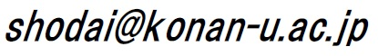

全講演ファイル
***************
10/25(火)
***************
◆Opening Remark + LOC からの挨拶 (5) 【13:00～13:05】
米徳大輔（金沢大学）
◆星形成・進化 (130) 【13:05〜15:15】
(45) 中村文隆（国立天文台） 現在の星形成（特に大質量星や星団形成）
(20) 福島 肇（京都大／東北大） 大質量星形成における輻射フィードバックの金属度・降着率依存性
(20) 仲内 大翼（東北大） 降着進化する大質量始原星及びWolf-Rayet星からの星風について
◆遠方銀河・AGN-1
(45) 大内正己（宇宙線研） 遠方銀河観測の現状
◆コーヒーブレイク (30)【15:15〜15:45】
◆遠方銀河・AGN-2 【15:45〜17:30】
(45) 今西昌俊（国立天文台） AGN 観測レビュー
(20) 尾上匡房（総研大） HSCすばる戦略枠観測サーベイで探るz>6低光度クェーサーの性質
(20) 川崎光太（愛媛大） 可視光輝線診断による低金属量AGN探査
(20) 菊田智史（国立天文台） LAEで探るz~5でのAGN周辺環境と周辺銀河へのフィードバック
***************
10/26(水)
***************
◆重力波 (145) 【9:30〜12:05】
(45) 内海洋輔（広島大） 重力波可視光対応天体探査
(20) 田川寛通（東京大） 多重孤立BHの合体によるGW150914の説明
(20) 松本達矢（京都大） GW150914から示唆される銀河系内BHの観測可能性
◆休憩 (10)
(20) 藤林 翔（京都大） 連星中性子星合体におけるニュートリノによる質量放出
(20) 三原建弘（理研） MAXI未同定短時間軟Ｘ線トランジェント(MUSST、マスト天体)
(20) 高田昌広（カブリIPMU） アンドロメダ銀河のHSC時間領域観測による原始ブラックホールの制限
◆昼食 (70) 【12:05〜13:15】
◆初代星-1 (125) 【13:15〜15:20】
(45) 細川隆史（京都大） 初代星形成
(20) 須佐元（甲南大） 初代星降着円盤の分裂におけるシンク粒子の取り扱いについて
(20) 守屋 尭（国立天文台） 大質量放出を伴う初代星からの対不安定型超新星
(20) 千秋 元（甲南大） 金属欠乏星の起源
(20) 藤本正行（北海学園大） 超金属欠乏炭素過多星の起源と初期宇宙における連星系の周期分布特性
◆コーヒーブレイク 【15:20〜15:50】
◆初代星-2 (85) 【15:50〜17:15】
(45) 樫山和巳（東京大） 大質量星安定性や巨大星の潮汐破壊
(20) 樋口公紀（九州大） 宇宙の進化と星形成過程の変遷
(20) 鄭 昇明（東京大） 初期宇宙における超大質量星形成
◆意見交換会（18:00〜20:00）
北國新聞社 21階 レストラン北斗
***************
10/27(木)
***************
◆初代星-3 (85) 【9:30〜12:30】
(45) 郡 和範（高エネ研） 将来の21cm線観測と新しい物理学
(20) 高橋実道（東北大） 初代星の降着成長は星の自転によって妨げられるか？
(20) 佐野栄俊（名古屋大） 銀河間潮汐相互作用による大質量星星団 R136 の形成
◆休憩 (10)
◆ブラックホールの進化 (85)
(45) 稲吉恒平（コロンビア大）BHのsuper-Eddington降着による急成長、連星BBH形成
(20) 梅田秀之（東京大） 急速降着によるSupermassive starとSupermassive BH形成
(20) 杉村 和幸（東北大） 非等方輻射フィードバックの下での初代星起源BHのガス降着進化
◆Closing Remark 【12:30〜12:40】
(10) 梅村雅之
日時： ２０１６年１０月２５日（火）～１０月２７日（木）
場所： 金沢歌劇座 ３階 第３・第４会議室
〒920-0993 石川県金沢市下本多町6番丁27番地
http://www.kagekiza.gr.jp/
初代星・初代銀河研究会 世話人 一同 梅村 雅之（筑波大学） 大向 一行（東北大学） 須佐 元 （甲南大学） 當真 賢二（東北大学） 冨永 望 （甲南大学） 細川 隆史（京都大学） 町田 正博（九州大学） 吉田 直紀（東京大学） 米徳 大輔 （金沢大学）(LOC)
